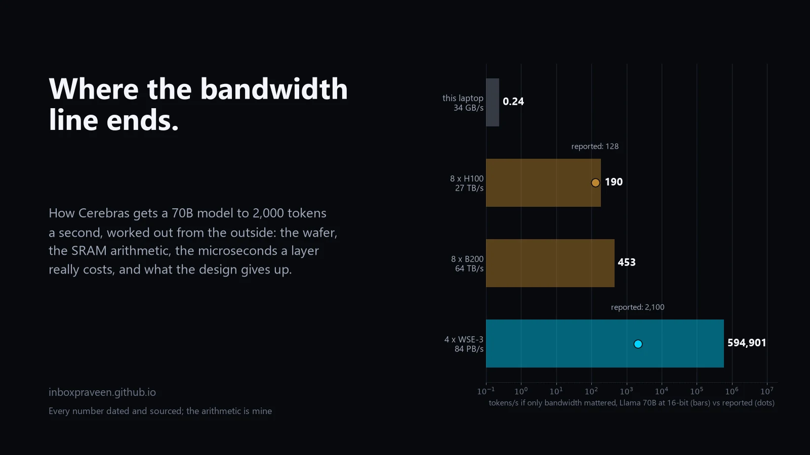

Cerebras
Hardware
Inference engineering
Python
Where the bandwidth line ends: how Cerebras gets to 2,000 tokens a second, worked out from the outside
The bandwidth line predicts 600,000 tokens a second for four Cerebras wafers on a 70B model and they get 2,000. An engineering read from public sources only: every speed claim dated and sourced, the wafer rebuilt from the core up, the microseconds a transformer layer really costs on a mesh and why eight published speeds agree on it, what the SRAM design gives up in context, prompts, batch and power, how Groq and NVIDIA solve the same equation, and what carries back to a laptop.